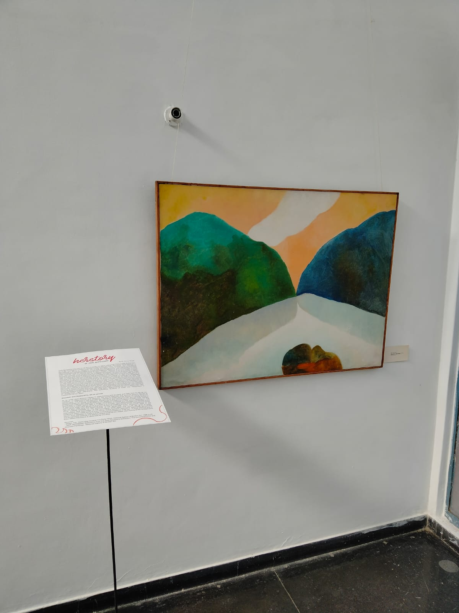
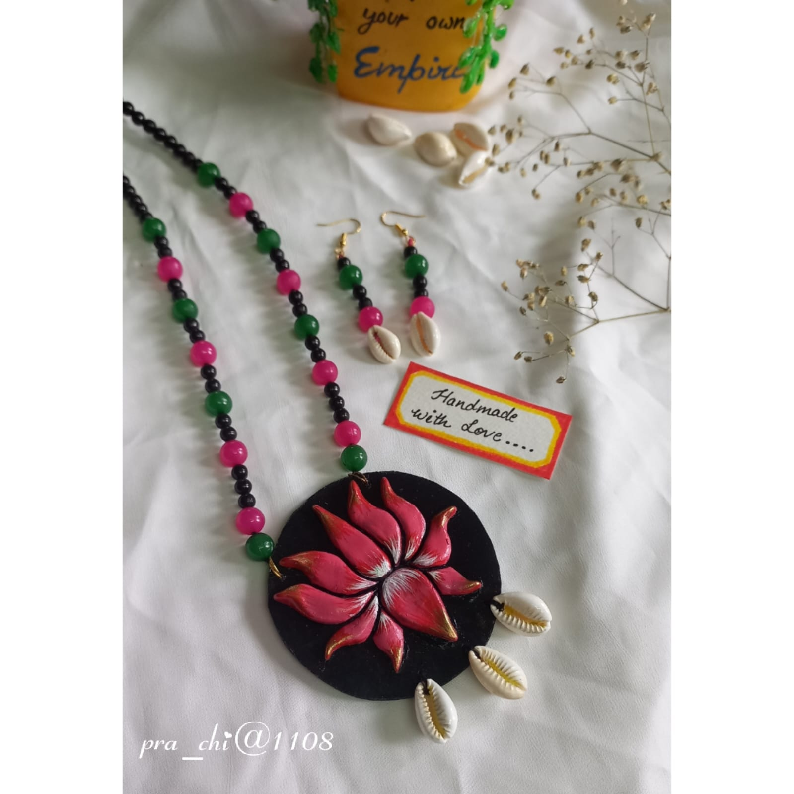
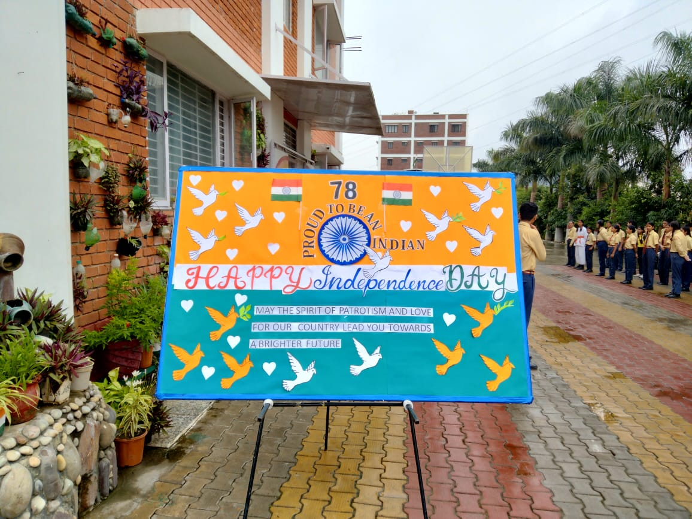

About the Artist & Her Craft
“Art is not merely a visual record; it is a silent narrative of the soul, a bridge between ancient heritage and contemporary consciousness.”
Chapter 1: Rooted in the Valley of Sages
My artistic journey began in Rishikesh, Uttarakhand, nestled along the banks of the sacred Ganges and surrounded by the quiet majesty of the Himalayas. Growing up in this sanctuary of natural and spiritual beauty, I learned to observe the world through a lens of deep reverence. The patterns of the leaves, the smooth textures of the river pebbles, and the vibrant colors of temple offerings became my earliest canvases and teachers.
To me, art was never about buying expensive materials—it was about uncovering the sacred beauty hidden inside the organic elements of the earth.


Chapter 2: The Scholar’s Mind & The Curator's Eye
While my hands speak the language of craft, my mind is trained in the rigorous discipline of art history and visual research. I believe that to create meaningful art, one must deeply understand its historical and cultural lineage.
My academic path has been a continuous pursuit of this depth:
- Bachelor of Fine Arts (B.F.A.) | Chandigarh University, Mohali (2018–2022)
- M.A. in History of Arts | Panjab University, Chandigarh (2022–2024)
- UGC NET Qualified | Recognized Visual Arts Researcher by the University Grants Commission (Dec 2025)
This academic foundation allowed me to transition into professional curation. As a member of the Student Curatorial Team at the Fine Arts Museum, Panjab University, I had the honor of co-curating major historic exhibitions, including: “Herstory of Modern Art” (March 2023) and “Beyond Tradition: Pluralism in Modern Indian Art” (October 2023).
These experiences taught me how to tell stories through art. When you purchase a painting, a hand-painted stone, or a clay piece from my atelier, you are not just buying decor; you are acquiring a thoughtfully researched, historically grounded narrative of visual culture.

Chapter 3: The Slow Philosophy of Clay & Skeleton Leaves
In a fast-paced digital world, I practice the philosophy of slow art. My creations are tactile, requiring days of meticulous patience and traditional craftsmanship.
Miniatures on Skeleton Peepal Leaves
Painting on dried, delicate skeleton veins of sacred peepal leaves is my signature medium. Each fragile leaf is treated, washed, and dried until only its intricate lacy skeleton remains. Upon this microscopic network, I hand-paint traditional motifs, miniature deities, and sacred animals—capturing the perfect intersection of nature's design and human devotion.
Hand-Molded Clay Terracotta Jewelry
Guided by my love for traditional terracotta, I sculpt, mold, bake, and hand-paint every single bead and pendant myself. Embellished with natural elements like cowrie shells and hand-painted spiritual motifs (like Goddess Durga), these sets are lightweight, organic statement pieces designed to make you feel connected to the earth.
Painted River Stones
Each stone is personally collected, its natural shape suggesting the artwork it wants to hold—whether it's the sacred geometry of a mandala, the divine gaze of Lord Jagannath, or the delicate wings of a monarch butterfly.

Chapter 4: Art as Pedagogy — Painting Our Future
To keep art alive, it must be shared. My career as a TGT Art & Craft Educator (formerly at Red Fort International Public School, Rishikesh) is a core pillar of my creative existence.
Teaching middle school CBSE students taught me that art is a powerful tool for building emotional resilience, confidence, and positive visual environments. Through community school projects, colorful school entrance boards, and creative workshops, my students and I co-create vibrant spaces that remind us daily to "Paint Your Own Future" and "Listen, Speak Up, and Be Positive".
Curation, teaching, and creating are not separate parts of my life—they are all part of the same river, flowing from a love of storytelling and traditional craftsmanship.

Welcome to the Atelier
Every original canvas, sacred leaf painting, and terracotta piece of jewelry in this shop is made by my own hands, carrying the fresh air of Rishikesh, the visual history of our heritage, and a piece of my soul.
Thank you for supporting slow, soulful, and credentialed craft.
Shop the Atelier